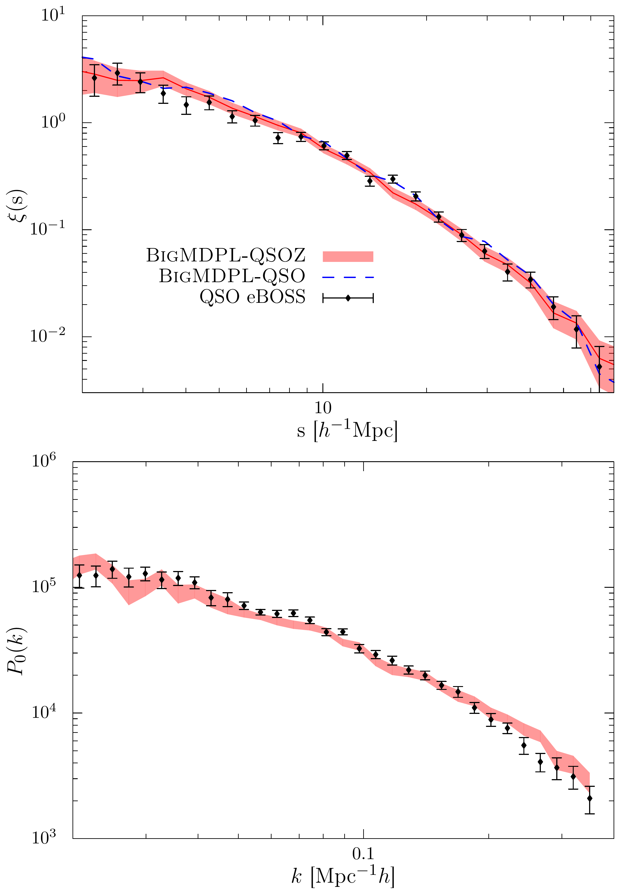

|  |
Clustering of quasars in the First Year of the SDSS-IV eBOSS survey : Interpretation and halo occupation distribution |
| Observations of Baryon Acoustic Oscillations offer indispensable information to constrain our cosmological model. In current and future surveys, quasars play a key role by extending our knowledge of the Universe with measurements of the acoustic scale at redshift larger than 1. Here, we present the first clustering study of the quasars observed by the extended Baryon Oscillation Spectroscopic Survey. We measure the clustering of about 70,000 quasars located in the redshift range 0.9 to 2.2 that cover 1,168 square degrees. We model the clustering and produce high-fidelity quasar mock catalogs based on the MultiDark simulation suite. In this aim, we update the (Sub)Halo Abundance Matching model to account for the specificities of the halo population hosting quasars. Finally, we find that quasars are hosted by halos with log halo masses of 12.7 and that their bias evolves from 1.54 (z=1.06) to 3.15 (z=1.98). |
| Please click here to access the mock QSO catalog based on the BigMultiDark Planck Simulation that reproduces the clustering observed in eBOSS Y1Q. |
| If you use these mocks, please cite Rodriguez-Torres et al. 2016 submitted and Rodriguez-Torres, et al. 2016a. |
last update, sept. 2016.